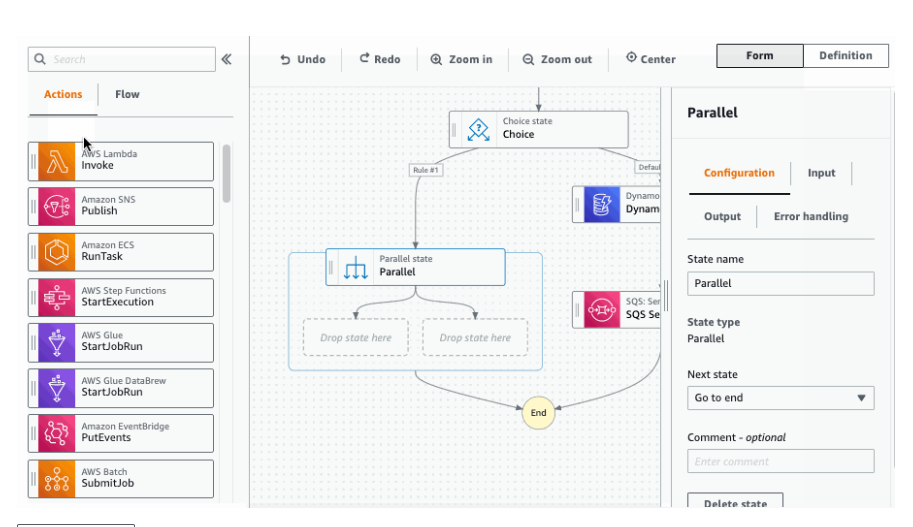

Example with Kinesis Data Firehose#

Create Kinesis Firehose for retrieving data and storing them onto S3 bucket each 60 seeconds or 5MB of buffer size
create ec2 instance, install on them aws-kinesis-agent which will be connected to firehose created in previous step
install kinesis agent -
sudo yum install aws-kinesis-agentin this example srcipt created by frank kane is used - it puts csv line into logs (/var/log/cadabra) (download from http://media.sundog-soft.com/AWSBigData/LogGenerator.zip)
unzip downloaded file
change permissions -
chmod a+x LogGenerator.pycreate target log directory -
mkdir /var/log/cadabraconfigure kinesis agent -
vim /etc/aws-kinesis/agent.jsonhere you can configure target kinesis or firehose endpoint (firehose.{region}.amazonaws.com)
you can add specific credentials by using keys
awsAccessKeyIdandawsSecretAccessKey, but it’s not the best one solution from security point of view. The best option is to create ec2 role with specific permissions and add them to running ec2 instance.define flows - what is the file pattern which will be followed and what is target stream/firehose name
start kinesis agent service (
sudo service aws-kinesis-agent startorsudo chkconfig aws-kinesis-agent onto autostart service on startup)kinesis agent store own logs in
/var/log/aws-kinesis-agent/aws-kinesis-agent.log
Example with Kinesis Data Stream#
 process is almost the same, the only changes are:
Kinesis Agent config - added dataProcessingOptions to convert csv to json
change target kinesisStream name to stream name
Kinesis Agent config - added flow, so we have two flows - one to put data into firehose and second to put data to stream